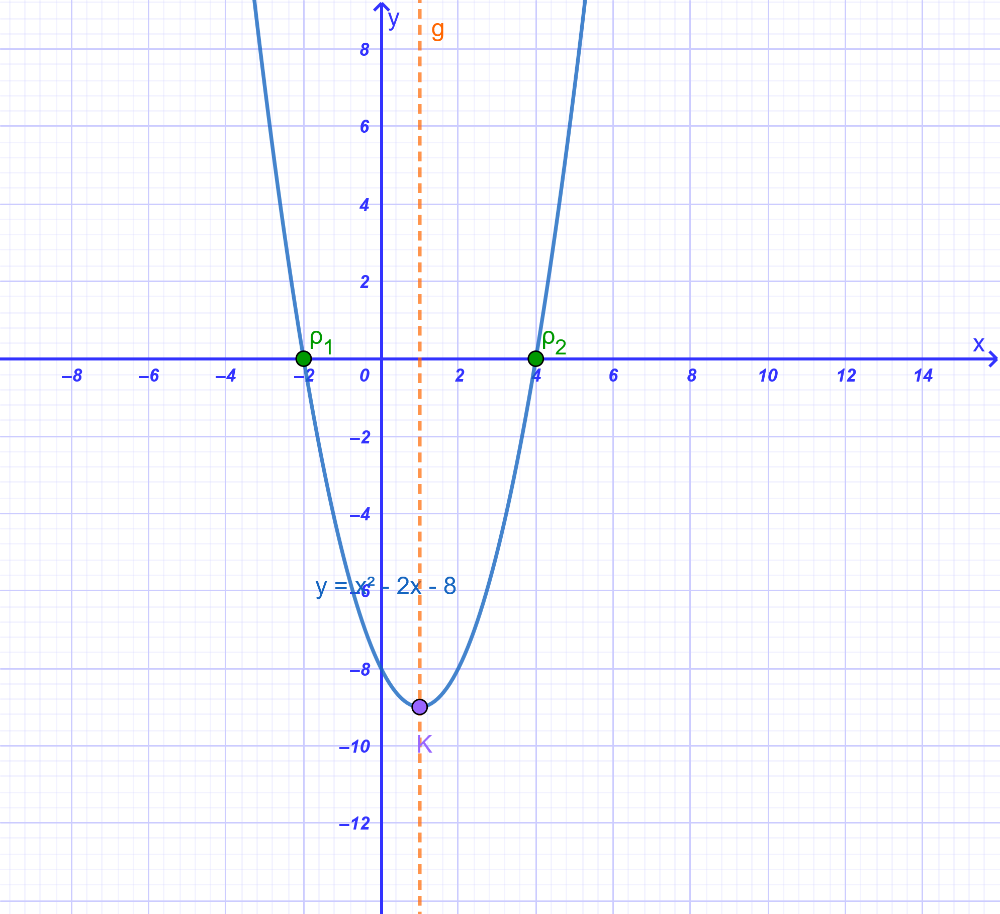
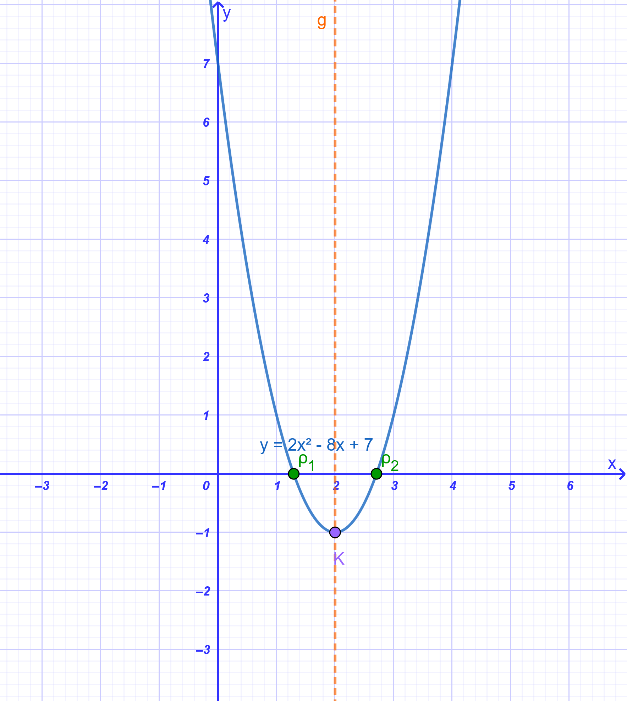
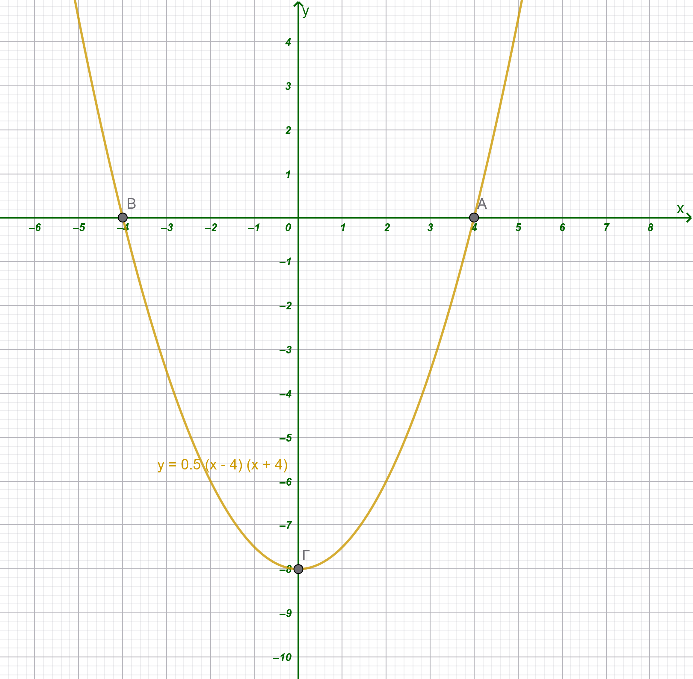
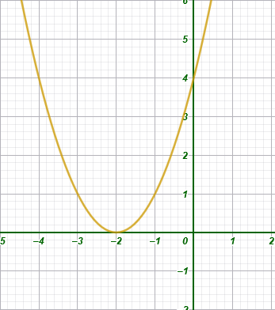
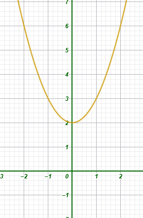
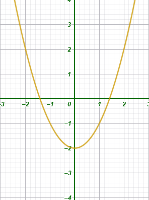
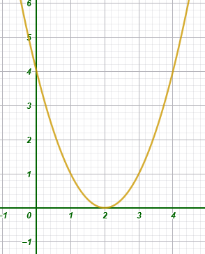
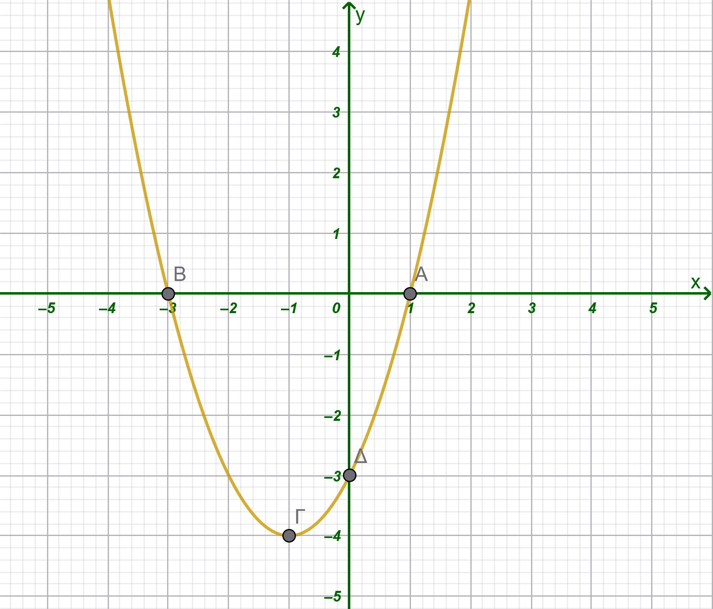

1 H συνάρτηση \(y = αx^2 + βx + γ\) με α ≠ 0.
1.1 Θεωρία
Η συνάρτηση της μορφής \(y = \alpha x^2 + \beta x + \gamma\) με \(\alpha, \beta, \gamma\) σταθερούς πραγματικούς αριθμούς και \(\alpha \neq 0\) ονομάζεται τετραγωνική συνάρτηση ή συνάρτηση δεύτερου βαθμού.
Γραφική Παράσταση: Η γραφική παράσταση αυτής της συνάρτησης είναι μια συνεχή καμπύλη γραμμή που ονομάζεται παραβολή.
Η σημασία του συντελεστή \(\alpha\):
Αν \(\alpha > 0\), η παραβολή έχει τα «κοίλα» στραμμένα προς τα πάνω (θετική κατεύθυνση του άξονα \(Oy\)).
Αν \(\alpha < 0\), η παραβολή έχει τα «κοίλα» στραμμένα προς τα κάτω (αρνητική κατεύθυνση του άξονα \(Oy\)).
Κορυφή και Άξονας Συμμετρίας:
Η παραβολή είναι συμμετρική ως προς μια κατακόρυφη ευθεία που ονομάζεται άξονας συμμετρίας. Η εξίσωση του άξονα συμμετρίας είναι \(x = -\dfrac{\beta}{2\alpha}\).
Το σημείο τομής της παραβολής με τον άξονα συμμετρίας της ονομάζεται κορυφή της παραβολής. Οι συντεταγμένες της κορυφής είναι \(\left(-\dfrac{\beta}{2\alpha}, -\dfrac{\Delta}{4\alpha}\right)\), όπου \(\Delta = \beta^2 - 4\alpha\gamma\) η διακρίνουσα του τριωνύμου.
Ακρότατα (Μέγιστο - Ελάχιστο):
Αν \(\alpha > 0\), η συνάρτηση παρουσιάζει ελάχιστο στην κορυφή της.
Αν \(\alpha < 0\), η συνάρτηση παρουσιάζει μέγιστο στην κορυφή της.
Κανονική Μορφή (Vertex Form): Ο τύπος της συνάρτησης μπορεί να μετασχηματιστεί στη μορφή \(y = \alpha(x - p)^2 + q\). Αυτή η μορφή δείχνει ότι η παραβολή προκύπτει από τη μετατόπιση της βασικής παραβολής \(y = \alpha x^2\) κατά \(p\) μονάδες οριζόντια και \(q\) μονάδες κατακόρυφα. Η μορφή \(\alpha \left[\left(x + \dfrac{\beta}{2\alpha}\right)^2 - \dfrac{\Delta}{4\alpha^2}\right]\) ονομάζεται κανονική μορφή του τριωνύμου.
Τομές με τους Άξονες:
- Τέμνει τον άξονα \(Oy\) στο σημείο \((0, \gamma)\).
- Τα σημεία τομής με τον άξονα \(Ox\) (αν υπάρχουν) προκύπτουν από τις λύσεις της εξίσωσης \(\alpha x^2 + \beta x + \gamma = 0\).
- Μετακινήστε τον δρομέα α για να δείτε τι συμβαίνει όταν αλλάζει το α της συνάρτησης.
- Μετακινήστε τον δρομέα γ ώστε να είναι μηδέν. Αλλάξτε την τιμή των α και β και παρατηρήστε τι συμβαίνει στην γραφική παράσταση.
- Κάντε το β μηδέν και μετακινήστε τα α και β. τι παρατηρείτε;
1.2 Παραδείγματα
Συνάρτηση \(y = x^2 - 2x - 8\):
- Για την κατασκευή της χρησιμοποιείται πίνακας τιμών, π.χ.
| x | -3 | -2 | -1 | 0 | 1 | 2 | 3 | 4 | 5 |
| y | 7 | 0 | -5 | -8 | -9 | -8 | -5 | 0 | 7 |
Η γραφική της παράσταση τέμνει τον άξονα των τετμημένων στα σημεία \(A(-2, 0)\) και \(B(4, 0)\), επομένως οι ρίζες της αντίστοιχης εξίσωσης είναι \(x_1 = -2\) και \(x_2 = 4\).
Εχει άξονα συμμετρίας την ευθεία \(x=\dfrac{-β}{2α}=1\), ελάχιστο \(\dfrac{-Δ}{4α}=9\) στο x=1 και κορυφή \(Κ\left(\dfrac{-β}{2α},\dfrac{-Δ}{4α}\right)=K(1,9)\)

- Συνάρτηση \(y = 2x^2 - 8x + 7\):
- Η συνάρτηση φέρεται στη μορφή \(y = 2(x - 2)^2 -1\).
- Έχει άξονα συμμετρίας την ευθεία \(x = 2\).
- Παρουσιάζει ελάχιστο για \(x = 2\), το οποίο είναι \(y = -1\).
- Τέμνει τον άξονα \(Oy\) στο \(7\) και τον \(Ox\) στα σημεία \(\dfrac{4 \pm \sqrt{2}}{2}\).

Συνάρτηση \(y = -2x^2 + 12x - 14\):
- Μετασχηματίζεται στη μορφή \(y = -2(x - 3)^2 + 4\).
- Η παραβολή έχει κορυφή το σημείο \((3, 4)\) και προκύπτει από τη μετατόπιση της \(y = -2x^2\) κατά \(3\) μονάδες δεξιά και \(4\) μονάδες πάνω.
Σημείωση: Αν η διακρίνουσα \(\Delta\) είναι αρνητική, η παραβολή δεν τέμνει τον άξονα \(Ox\).
1.3 Ασκήσεις
Κατακόρυφη Μετατόπιση: Να περιγράψετε πώς προκύπτει η γραφική παράσταση της \(y = x^2 - 4\) από την \(y = x^2\) και να βρείτε την κορυφή της .
Να εξηγήσετε γιατί η γραφική παράσταση της \(y = 2(x+4)^2\) και να την συγκρίνετε με την γραφική παράσταση της \(y = 2x^2\). Τι παρατητείτε;
Σύνθετη Μετατόπιση: Να βρεθεί η γραφική παράσταση της συνάρτησης \(y = 2(x+4)^2 - 3\) μέσω διαδοχικών μετατοπίσεων της βασικής παραβολής \(y = 2x^2\) .
Μετασχηματισμός σε Κανονική Μορφή: Να φέρετε τη συνάρτηση \(y = -2x^2 + 12x - 14\) στη μορφή \(y = \alpha(x-p)^2 + q\) με την μέθοδο συμπλήρωσης τετραγώνου .
Γραφική Επίλυση (Τομή με \(x'x\)): Να επιλυθεί γραφικά η εξίσωση \(x^2 - 2x - 3 = 0\) βρίσκοντας τα σημεία τομής της παραβολής \(y = x^2 - 2x - 3\) με τον άξονα των \(x\) .
Σημεία Τομής με Άξονες: Να βρεθούν οι συντεταγμένες των σημείων στα οποία η παραβολή \(y = x^2 + 5x - 6\) τέμνει τους άξονες \(x'x\) και \(y'y\) .
Να εξετάσετε αν η εξίσωση \(x^2 - 2x + 3 = 0\) έχει πραγματικές ρίζες παρατηρώντας τη θέση της παραβολής στο σύστημα συντεταγμένων.
Το σχήμα δείχνει την γραφική παράσταση της \(y=0,5x^2-8\). Να συμπληρώσετε τις παρακάτω προτάσεις.

α. Η γραφική παράσταση είναι ………………… με κορυφή το σημείο ………… και άξονα συμμετρίας την ευθεία ………………
β. Η συνάρτηση αυτή παίρνει …………… τιμή y =…………… , όταν x = ………………
γ. Η γραφική παράσταση τέμνει τον άξονα x΄x στα σημεία ……………… , ………………… και τον άξονα y΄y στο σημείο……………….Να χαρακτηρίσετε τις παρακάτω προτάσεις με (Σ), αν είναι σωστές ή με (Λ), αν είναι λανθασμένες:
| Η συνάρτηση \(y = -3x^2 - 2x + 1\) παίρνει ελάχιστη τιμή. | ........ |
|---|---|
| Ο άξονας y΄y είναι άξονας συμμετρίας της παραβολής \(y = -2x^2 + 3\). | |
| Η παραβολή \(y = x^2 - 5x + 4 \) τέμνει τον άξονα y΄y στο σημείο Α(0, 4). | |
| H κορυφή της παραβολής \(y = x^2 - 3\) είναι σημείο του άξονα y΄y. | |
| Η κορυφή της παραβολής \(y = (x - 3)^2\) είναι σημείο του άξονα x΄x. | |
| Η συνάρτηση \(y=2x^2+2x-5\) παίρνει μέγιστη τιμή. |
- Να συμπληρώσετε τον παρακάτω πίνακα αντιστοιχίζοντας σε κάθε παραβολή την εξίσωσή της.
| 1. \(y=x^2-2\) | A.  |
| 2. \(y=(x-2)^2\) | B.  |
| 3. \(y=(x+2)^2\) | Γ.  |
| 4. \(y=x^2+2\) | Δ.  |
- Ορισμένες τιμές της συνάρτησης \(y = αx^2 + βx + γ\) με α > 0 φαίνονται στον πίνακα.
| x | -4 | -3 | -2 | -1 | 0 | 1 | 2 |
|---|---|---|---|---|---|---|---|
| y | 5 | 0 | -3 | -4 | -3 | 0 | 5 |
\
Να συμπληρώσετε τα κενά σε καθεμιά από τις παρακάτω προτάσεις:
α) Η γραφική παράσταση της συνάρτησης είναι παραβολή με άξονα συμμετρίας την ευθεία …………………… και κορυφή το σημείο …………
β) Η συνάρτηση αυτή παίρνει ελάχιστη τιμή y = ……, όταν x = …………
γ) Η γραφική παράσταση της συνάρτησης τέμνει τον άξονα x΄x στα σημεία ……………… , ……………… και τον άξονα y΄y στο σημείο …………………
- Να σχεδιάσετε τις παραβολές:
α) \(y = x^2 - 4x + 3\)
β) \(y = -x^2 - 2x + 8\)
- Να βρείτε τη μέγιστη ή την ελάχιστη τιμή κάθε συνάρτησης:
α) \(y = 2x^2 - 8x + 5\)
β) \(y = -3x^2 + 6x + 2\)
γ) \(y = 4(x + 2)^2 - 5\)
δ) \(y = -1(x - 3)^2 + 10\)
Να σχεδιάσετε τη γραφική παράσταση της συνάρτησης \(y = x^2 - 4x\) για \(-1 \le x \le 5\) και με τη βοήθεια αυτής να βρείτε τις τιμές του \(x\), για τις οποίες ισχύει \(x^2 - 4x = 0\).
Να σχεδιάσετε τη γραφική παράσταση της συνάρτησης \(y = x^2 + 4x + 5\) και με τη βοήθεια αυτής να αποδείξετε ότι \(x^2 + 4x + 5 > 0\) για κάθε πραγματικό αριθμό \(x\).
Δίνεται η συνάρτηση \(y = x^2 - 2x + \kappa\).
α) Για ποια τιμή του πραγματικού αριθμού \(\kappa\) το σημείο \(M(2, 5)\) ανήκει στη γραφική παράσταση της συνάρτησης;
β) Αν \(\kappa = -3\), να σχεδιάσετε τη γραφική παράσταση της συνάρτησης για \(-2 \le x \le 4\) και να βρείτε τα κοινά της σημεία με τους άξονες.
Να σχεδιάσετε την παραβολή \(y = x^2 + 2x - 8\). Αν \(A, B, \Gamma\) είναι τα κοινά της σημεία με τους άξονες, να υπολογίσετε το εμβαδόν του τριγώνου που σχηματίζουν τα σημεία αυτά.
Να βρείτε τους αριθμούς \(\alpha\) και \(\beta\), ώστε η συνάρτηση \(y = x^2 + \alpha x + \beta\) για \(x = 2\) να παίρνει ελάχιστη τιμή την \(y = -3\).
Μια μπάλα εκτοξεύεται και διαγράφει παραβολική τροχιά με μέγιστο ύψος \(12\text{ m}\) σε οριζόντια απόσταση \(30\text{ m}\) από το σημείο εκτόξευσης \(O(0,0)\).
α) Να αποδείξετε ότι η παραβολή έχει εξίσωση \(y = -\dfrac{12}{900}x^2 + \dfrac{24}{30}x\) για \(0 \le x \le 60\).
β) Ποιο είναι το ύψος της μπάλας όταν βρίσκεται σε οριζόντια απόσταση \(10\text{ m}\) και σε ποιο άλλο σημείο της τροχιάς η μπάλα απέχει από το έδαφος την ίδια απόσταση;
Σημείο (0,0) –> Οταν x=0 ===> y=0 άρα γ=0
Σημείο (30,12) –> \(α\cdot30^2+β\cdot30=12\)
Σημείο (60,0) –> \(α\cdot60^2+β\cdot60=0\)
\[\bbox[yellow, 5px]{\color{blue}\Large\text{---}}\]
ΚΑΛΗ ΜΕΛΕΤΗ!